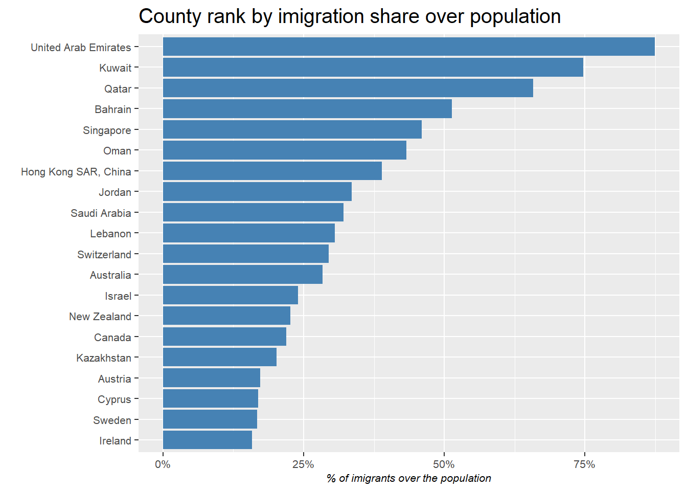
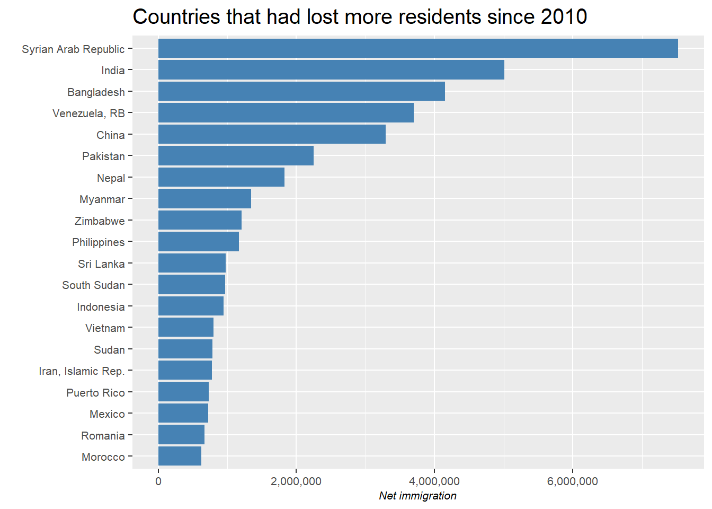
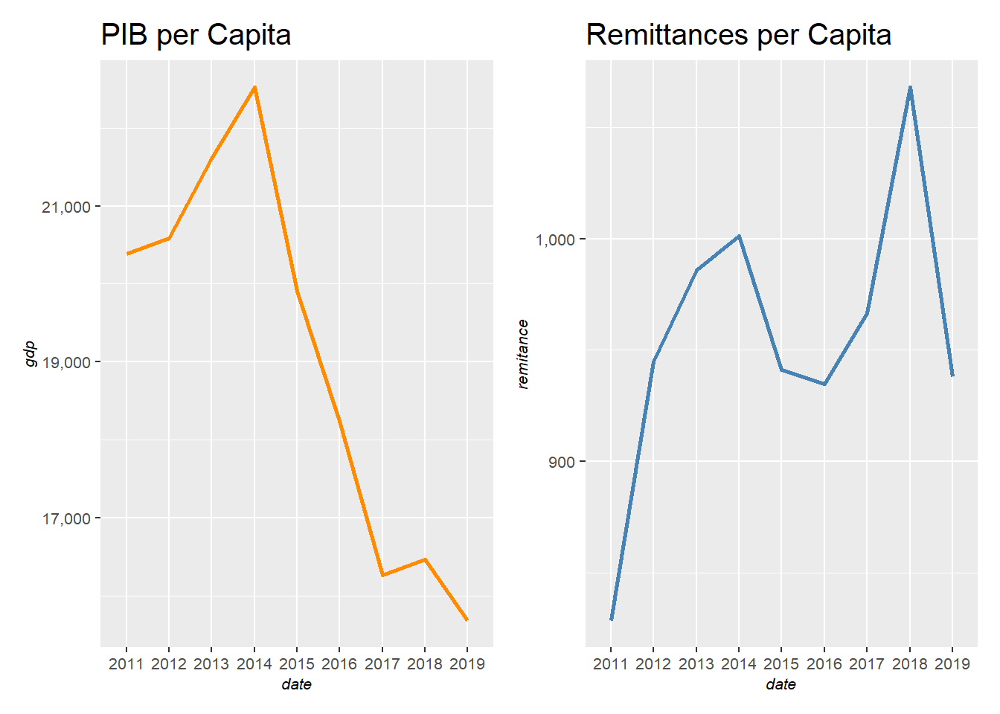
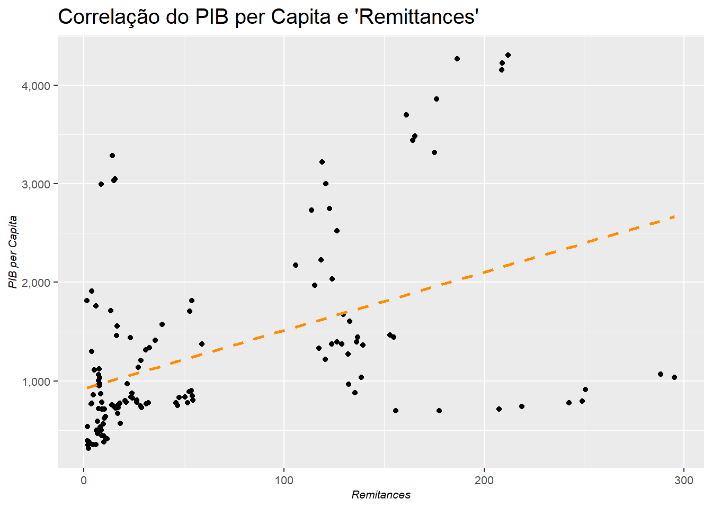

A imigração vem sendo um tema central nos debates políticos para presidencia, gerando muitas dúvidas nos eleitores, por conta de fake news que acabam surgindo, e também muita esperança para as pessoas que buscam mudar de vida com a mudança de país. Esta onda imigratória está cada vez chamando mais a atenção da mídia, por conta da grave crise na Syria, Yemen e Venezuela, que fez com que milhões de pessoas decidissem sair de seus lares.
Esta atenção da mídia fez com que estudos mais aprofundados sobre o tema surgissem, visando desmistificar alguns fatos sobre o tema. Um estudo que me chamou bastante a atenção foi o realizado pela The Economist, onde se conduziram diversas reportagens sobre aspectos do fluxo imigratório, como o impacto nos países que recebem as pessoas, empregabilidade, bem-estar, entre outros. A reportagem foi muito bem feita e o tema me atrai bastante, por isso resolvi fazer este post, para tentar analisar os dados do fluxo imigratório.
Na tentativa de complementar os insights gerados pela reportagem, vou usar os dados do Banco Mundial, através de uma API que pode ser acessada pelo R com o pacote wbstats. Esta API me permitirá acessar o banco de dados desta instituição, que me parece ser a melhor fonte para dados de fluxo imigratório.
A imagem abaixo é de uma das reportagens da revista. Fantástica!
Antes de iniciar a análise dos dados, vou listar abaixo as principais conclusões das reportagens desenvolvidas nesta edição da The Economist.
Pessoas que conseguem migrar de seus países, geralmente saindo de um país pobre e imigrando para um país rico, auferem um aumento de 3 a 6 vezes em sua renda, por conta de que países ricos possuem melhores instituições, melhor alocação de capital e empresas mais modernas.
Se todas as pessoas que desejassem se mudar de país conseguissem, o PIB mundial poderia dobrar, por conta de que a mão de obra e o capital estaria sendo melhor utilizado.
Imigrantes têm mais chance de abrir seu próprio negócio no país em que entram, pois conseguem notar com mais facilidade demandas não atendidas, e também por conta de que descobrem soluções alternativas para problemas existentes na sociedade em que entram. Em outras palavras, os imigrantes olham para as necessidades da sociedade em que entram com outra perspectiva, pensando fora da caixa.
O maior “problema” com relação à imigração é a mudança cultural (se é que se pode chamar isso de um problema), que ocorre rapidamente em locais que recebem um fluxo imigratório, por conta de que os imigrantes de agrupam em locais específicos. Além de ser o principal problema, é algo difícil de se solucionar, pois é difícil mensurá-lo e contestá-lo.
As pessoas são mais tolerantes ao fluxo imigratório em seus países quando notam que seu governo está sob controle da situação e também das fronteiras de seu país
Os imigrantes na maioria das vezes compartilham seus rendimentos com seus familiares que ficaram no país de origem. Esta forma de investimento é chamada de remittances. Estas remessas já constituem a maior fonte de investimento direto externo de alguns países e seu potencial de impacto é alto, visto que é um investimento que vai direto para as pessoas que precisam e o risco de serem desviada por corrupção é menor. Atualmente, em 28 países, estas remessas representam mais de 10% de seus respectivos PIBs.
Agora que entendemos alguns aspectos do fluxo imigratório, nós podemos analisar alguns datasets da base de dados do Banco Mundial para nos aprofundar um pouco mais no tema. Para isso, vamos usar os seguintes pacotes.
library(tidyverse) # data science and data manipulation packages
library(wbstats) # World Bank API
library(patchwork)
theme_graph <- function(){
theme(
plot.title = element_text(size = 15),
plot.subtitle = element_text(size = 9),
plot.caption = element_text(face = "italic", size = 7),
axis.text = element_text(size = 8),
axis.title = element_text(face = "italic", size = 8),
strip.background = element_rect(fill = "grey"),
strip.text = element_text(face = "bold"),
legend.title = element_blank(),
legend.position = "bottom"
)
}A primeira informação que vale a pena ser vista sobre o tema é a quantidade de pessoas consideradas imigrantes pelo Banco Mundial. O gráfico abaixo irá mostrar a série temporal desta variável.
O código abaixo salva na variável ‘migrants_pop’ o resultado da chamada da API do Banco Mundial. Veja que é necessário especificar qual indicator se deseja trazer, o período e quais países para ser retornado.
# Creating a variable with the data.frame of the requested data
migrants_pop <- wbstats::wb(indicator = "SM.POP.TOTL",
country = "countries_only",
startdate = 1980,
enddate = 2020)Após fazer a requisição, é possível plotar a série temporal.
migrants_pop %>%
group_by(date) %>%
summarise(immigrants = sum(value)) %>%
ggplot()+
geom_line(mapping = aes(x = date, y = immigrants, group = 1),
size = .5,
color = "dark orange",
alpha = .6)+
geom_point(mapping = aes(x = date, y = immigrants),
color = "dark orange")+
scale_y_continuous(labels = scales::comma)+
theme_graph()+
labs(title = "População Imigrante ao Longo do Tempo",
x = "",
y = "")
Veja que o dataset trouxe dados até 2015, mesmo eu tendo solicitado até 2020. Em 2015 a população imigrante era de 250 milhões (maior do que a população do Brasil). Agora vamos verificar os países que possuem maior proporção de imigrantes em seus territórios. O próximo gráfico irá trazer os 20 países com maior proporção de população imigrante. Provavelmente Canadá e Austrália estarão presentes neste rank. Irei remover países com população abaixo de 1 milhão de habitantes.
# Trazendo a população dos países
population <- wbstats::wb(indicator = "SP.POP.TOTL",
country = "countries_only")# Juntando os dois datasets de população e imigrantes
migrants_pop %>%
filter(date == "2015") %>%
select(country, date, value) %>%
inner_join(population, by = c("country" = "country", "date" = "date")) %>%
mutate(share_immigrants = round(value.x/value.y, digits = 4)) %>%
filter(value.y >= 1000000) %>% # Retirando países com baixa população
arrange(desc(share_immigrants)) %>%
head(20) %>%
mutate(country = fct_reorder(country, share_immigrants)) %>%
ggplot()+
geom_col(mapping = aes(x = country, y = share_immigrants),
fill = "steel blue")+
scale_y_continuous(labels = scales::percent)+
theme_graph()+
labs(title = "County rank by imigration share over population",
x = "",
y = "% of imigrants over the population")+
coord_flip()
Alguns países me surpreenderam estar na lista, como por exemplo Arábia Saudita. Este artigo reforça esse número.
Se por um lado, alguns países receberam muitos imigrantes, por outro, alguns países perderam muitos residentes. Vamos ver os países que mais perderam residentes nos últimos anos. O Banco Mundial possui um indicador que mostra a saída líquida de pessoas, e com essa métrica, podemos classificar os países do menor valor para o maior e selecionar os 20 primeiros. Com isso, o resultado será os 20 países que mais perderam pessoas.
net_immigration <- wbstats::wb(indicator = "SM.POP.NETM",
country = "countries_only",
startdate = 2010,
enddate = 2019) %>%
select(country, value, date)
# Dataset sample
net_immigration[sample(nrow(net_immigration),5), ] %>%
knitr::kable(format.args = list(decimal.mark = ",", big.mark = "."))| country | value | date | |
|---|---|---|---|
| 1108 | Libya | -300.002 | 2012 |
| 133 | Burundi | 10.003 | 2017 |
| 428 | Comoros | -10.000 | 2012 |
| 1163 | Luxembourg | 48.704 | 2017 |
| 343 | Channel Islands | 6.754 | 2017 |
net_immigration %>%
group_by(country) %>%
summarise(net_immigration = sum(value)) %>%
arrange(net_immigration) %>%
head(20) %>%
mutate(net_immigration = net_immigration * -1,
country = fct_reorder(country, net_immigration)) %>%
ggplot()+
geom_col(mapping = aes(x = country, y = net_immigration),
fill = "steel blue")+
scale_y_continuous(labels = scales::comma)+
theme_graph()+
coord_flip()+
labs(title = "Countries that had lost more residents since 2010",
x = "",
y = "Net immigration")
Síria e Venezuela são dois países que eu esperava ver neste gráfico. Porém Índia e China aparecem por conta de sua grande população, pois um pequeno movimento de seus habitantes é algo grande comparado aos outros. O ideal é normalizar este dataset usando a população de cada país, de forma que a saída de pessoas seja relativa à sua população. Para isso, basta cruzarmos este dataset com o dataset de população do país para criar a métrica de ‘saída líquida relativa de pessoas’.
# Net immigration summed during the period
net_immigration %>%
group_by(country) %>%
summarise(net_immigration = sum(value)) -> net_immigration
# Joinning the population and net_immigration data
population %>%
filter(date == 2015) %>%
mutate(population = value) %>%
select(country, population) %>%
inner_join(net_immigration, by = c("country" = "country")) %>%
mutate(net_immigration_share = round(net_immigration/population, digits = 4)) %>%
arrange(net_immigration_share) %>%
head(20) %>%
mutate(net_immigration_share = net_immigration_share * -1,
country = fct_reorder(country, net_immigration_share)) %>%
ggplot()+
geom_col(mapping = aes(x = country, y = net_immigration_share),
fill = "steel blue")+
scale_y_continuous(labels = scales::percent)+
theme_graph()+
coord_flip()+
labs(title = "Saída Relativa de Pessoas dos Países",
x = "",
y = "",
caption = "De 2010 até 2017")
Com essa visão ajustada, podemos ver outros países compondo o ranking. Seguindo adiante, vamos verificar as ‘remittances’ que são enviadas por imigrantes para seus familiares que estão em dificuldades. Um dado importante indicado nas reportagens da revista é que este fluxo de investimento direto representa mais de 10% do PIB de 29 países. Vamos ver se este indicador é corroborado pelo dataset do Banco Mundial.
Por sorte o Banco Mundial já mensura o percentual de ‘remittances’ sobre o PIB, desta forma desenvolver esta tabela ficou bem simples.
remitances_over_gdp <- wbstats::wb(indicator = "BX.TRF.PWKR.DT.GD.ZS",
country = "countries_only")
remitances_over_gdp %>%
filter(date == "2018",
country != "Lesotho",
value > 10) %>%
mutate("Remittance over gdp" = paste(round(value,digits = 2),"%",sep = "")) %>%
arrange(desc(value)) %>%
mutate(rows = row_number()) %>%
select(rows, date, country, "Remittance over gdp") %>%
knitr::kable(format.args = list(decimal.mark = ",", big.mark = "."))| rows | date | country | Remittance over gdp |
|---|---|---|---|
| 1 | 2018 | Tonga | 40.73% |
| 2 | 2018 | Haiti | 32.53% |
| 3 | 2018 | Kyrgyz Republic | 32.51% |
| 4 | 2018 | Tajikistan | 29.02% |
| 5 | 2018 | Nepal | 28.43% |
| 6 | 2018 | El Salvador | 20.63% |
| 7 | 2018 | Honduras | 19.88% |
| 8 | 2018 | West Bank and Gaza | 19.39% |
| 9 | 2018 | Samoa | 17.96% |
| 10 | 2018 | Moldova | 16.04% |
| 11 | 2018 | Jamaica | 15.92% |
| 12 | 2018 | Kosovo | 15.56% |
| 13 | 2018 | Uzbekistan | 15.1% |
| 14 | 2018 | Marshall Islands | 14.21% |
| 15 | 2018 | Liberia | 14.09% |
| 16 | 2018 | Comoros | 13.8% |
| 17 | 2018 | Yemen, Rep. | 13.67% |
| 18 | 2018 | Guatemala | 12.91% |
| 19 | 2018 | Lebanon | 12.7% |
| 20 | 2018 | Gambia, The | 12.53% |
| 21 | 2018 | Armenia | 11.94% |
| 22 | 2018 | Cabo Verde | 11.87% |
| 23 | 2018 | Georgia | 11.56% |
| 24 | 2018 | Nicaragua | 11.52% |
| 25 | 2018 | Ukraine | 11.23% |
| 26 | 2018 | Bosnia and Herzegovina | 11.21% |
| 27 | 2018 | Montenegro | 10.69% |
| 28 | 2018 | Jordan | 10.59% |
| 29 | 2018 | Senegal | 10.45% |
| 30 | 2018 | Egypt, Arab Rep. | 10.17% |
| 31 | 2018 | Kiribati | 10.15% |
Aparentemente são 31 países nesta situação, o que corrobora o que foi indicado na reportagem, visto que alguns países desta tabela são bem pequenos, e podem ter sido desconsiderados pela revista.
Outra informação indicada nas reportagens é de que as remessas enviadas pelos familiares aos seus parentes é um fluxo acíclico. Isso quer dizer que o fluxo não varia em conformidade com a variação do PIB do país que recebe este investimento. Essa hipótese tem um fundamento sólido, visto que o imigrante, ao ver seus parentes precisando de ajuda (por conta de uma crise econômica), envia mais dinheiro para que eles consigam passar por esta situação adversa. Apesar deste embasamento, é necessário ver empiricamente esta afirmação.
Vou selecionar alguns países com baixo PIB per capita para ver se o fluxo de ‘remittances’ de fato assume um comportamento acíclico. Os países serão: Suriname, Somalia, Serra Leoa, Senegal, Sudão, Ruanda, Nepal, Nigéria, Malawi, Mali, Líbia, Quênia, Etiópia, Eritreia e Congo.
Agora vamos ver o fluxo de ‘remittances’ e o PIB per Capita.
Tendo as duas variáveis, antes de compará-las, será necessário normalizar o fluxo de ‘remittances’ pela população. O seguinte código fará esta normalização.
remitances_received %>%
mutate(remitances = value) %>%
select(date, country, remitances) %>%
filter(country %in% country_view,
date > 2010) %>%
inner_join(population, by = c("date" = "date", "country" = "country")) %>%
select(date, country, remitances, value) %>%
mutate(remitances_adj = round(remitances/value, digits = 4)) %>%
select(date, country, remitances_adj) -> remitances
# Gerando uma amostra do dataset
remitances[sample(nrow(remitances),5), ] %>%
knitr::kable(caption = "Amostra do dataset")| date | country | remitances_adj | |
|---|---|---|---|
| 86 | 2012 | Senegal | 117.6113 |
| 13 | 2013 | Ethiopia | 8.7333 |
| 64 | 2016 | Rwanda | 14.7844 |
| 104 | 2012 | Syrian Arab Republic | 79.3707 |
| 105 | 2011 | Syrian Arab Republic | 76.9597 |
Agora eu posso cruzar os dois datasets para ver a correlação das duas variáveis para os países selecionados.
gdp <- gdp_pc %>%
mutate(gdp_pc = value) %>%
select(date, country, gdp_pc) %>%
inner_join(remitances, by = c("date" = "date", "country" = "country")) %>%
group_by(date) %>%
summarise(gdp = sum(gdp_pc),
remitance = sum(remitances_adj)) %>%
ggplot()+
geom_line(mapping = aes(x = date, y = gdp, group = 1),
color = "dark orange", size = 1)+
scale_y_continuous(labels = scales::comma)+
theme_graph()+
labs(title = "PIB per Capita")
remittances <- gdp_pc %>%
mutate(gdp_pc = value) %>%
select(date, country, gdp_pc) %>%
inner_join(remitances, by = c("date" = "date", "country" = "country")) %>%
group_by(date) %>%
summarise(gdp = sum(gdp_pc),
remitance = sum(remitances_adj)) %>%
ggplot()+
geom_line(mapping = aes(x = date, y = remitance, group = 1),
color = "steel blue", size = 1)+
scale_y_continuous(labels = scales::comma)+
theme_graph()+
labs(title = "Remittances per Capita")
gdp+remittances
Nota-se que a relação não é direta, porém também não é inversa. Desta forma, esta relação acíclica não fica evidente ao vermos estas duas séries temporais. O gráfico abaixo mostra a correlação destas duas séries temporais.
gdp_pc %>%
mutate(gdp_pc = value) %>%
select(date, country, gdp_pc) %>%
inner_join(remitances, by = c("date" = "date", "country" = "country")) %>%
ggplot()+
geom_point(mapping = aes(x = remitances_adj, y = gdp_pc))+
geom_smooth(mapping = aes(x = remitances_adj, y = gdp_pc),
method = "lm",
formula = y ~ x,
se = F,
lty = 2,
color = "dark orange")+
scale_y_continuous(labels = scales::comma)+
scale_x_continuous(labels = scales::comma)+
theme_graph()+
labs(title = "Correlação do PIB per Capita e 'Remittances'",
y = "PIB per Capita",
x = "Remitances")
Eu esperava ver uma correlação mais forte, onde o PIB per Capito reduzido iria trazer um valor de ‘remittances’ per Capita alto. Porém não ficou tão clara esta correlação. O modelo de regressão linear para este contexto pode ser do seguinte formato:
\[R = \beta_0 + \beta_1 pc.gdp + \mu\]
Este modelo tentará explicar variações do fluxo de ‘remittances’ per Capita em função do PIB per Capita, de forma que se possa prever o valor da variável dependente com um dado grau de confiança.
gdp_pc %>%
mutate(gdp_pc = value) %>%
select(date, country, gdp_pc) %>%
inner_join(remitances, by = c("date" = "date", "country" = "country")) %>%
lm(formula = remitances_adj ~ gdp_pc) %>%
summary() %>%
pander::pander()| Estimate | Std. Error | t value | Pr(>|t|) | |
|---|---|---|---|---|
| (Intercept) | 19.29 | 9.823 | 1.964 | 0.05165 |
| gdp_pc | 0.03542 | 0.006064 | 5.842 | 3.974e-08 |
| Observations | Residual Std. Error | \(R^2\) | Adjusted \(R^2\) |
|---|---|---|---|
| 131 | 66.08 | 0.2092 | 0.2031 |
Com o output do modelo, podemos reescrever a equação inserindo os valores do intercepto e inclinação.
\[R = 19.29 + 0.03542 pc.gdp + \mu\]
Embora o resultado tenha saído diferente do que eu esperava, tanto o intercepto quanto a inclinação se mostram estatisticamente significativos, com um valor-p abaixo de 5%.